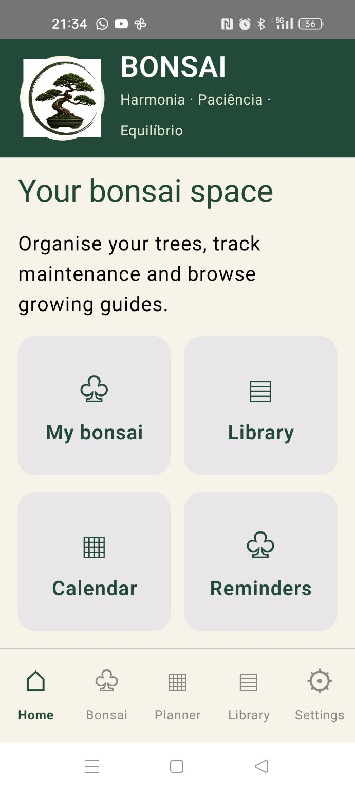
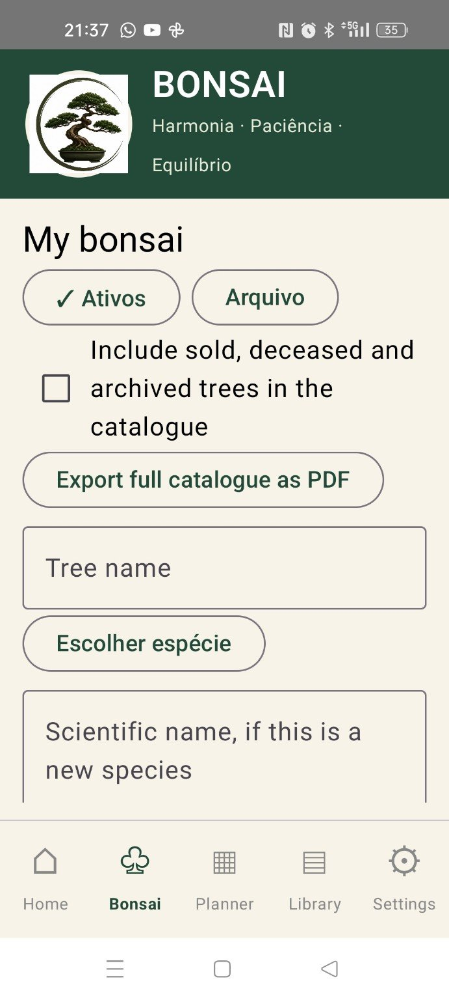
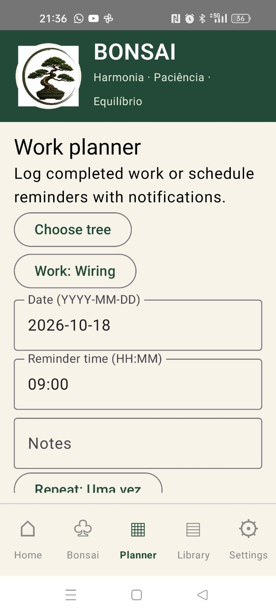
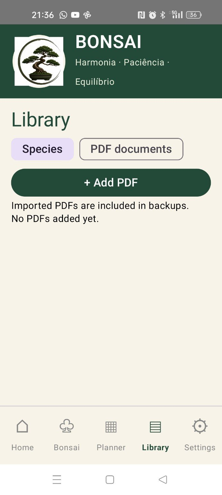
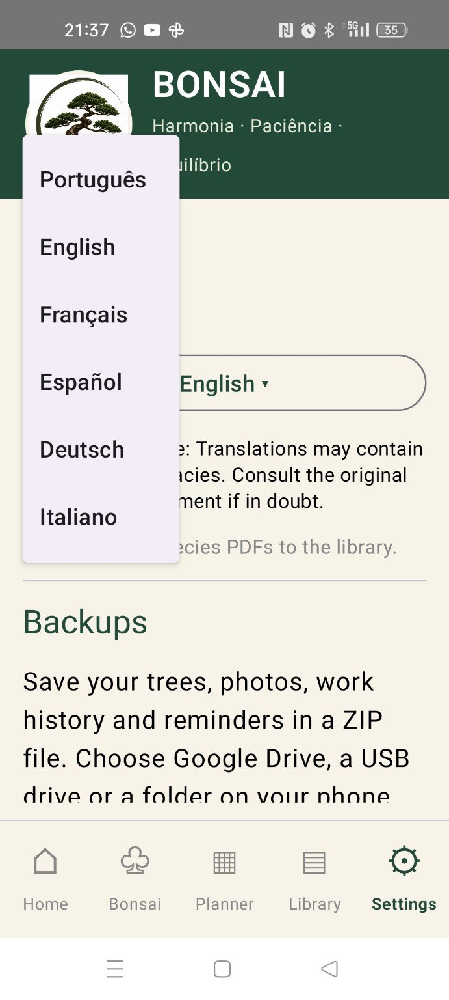

O teu espaço para cuidar dos bonsais
Organiza a tua coleção, regista trabalhos, programa lembretes e guarda documentos. Grátis para Android, em seis idiomas.
⬇ DOWNLOADGrátis · Android · O ficheiro APK será disponibilizado na secção Releases quando estiver pronto.
🌳 Os meus bonsais
Organiza as árvores, espécies e fotografias.
📅 Agenda
Regista trabalhos e programa lembretes.
📚 Biblioteca
Guarda documentos e fichas PDF.
☀️ Meteorologia
Consulta a previsão do tempo.
Imagens reais da aplicação




